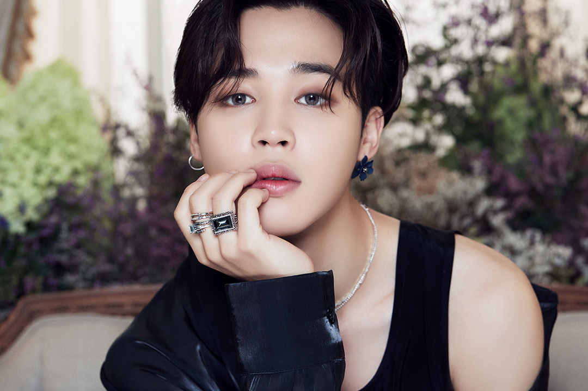
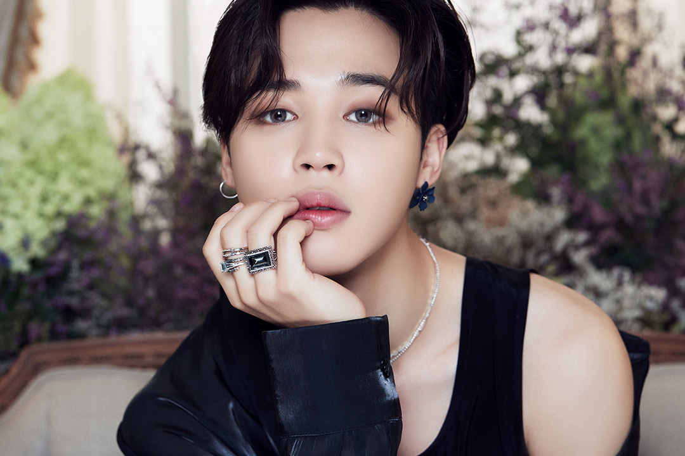

Jimin is the third youngest member of BTS.
The well known for: His soft and angelic features
and light, blissful voice of the team.
FUN FACT: Jimin has black belt in taekwondo and
he was the last member to join BTS.
Famous line: "Jimin, you nice. Keep going."
AKA: Jimi, Mochi, ChimChim.
Fun fact:Jimin was valedictorian in his pre-debut years (hightest ranked student aka no.1 overall)
and he was class president for 9 years.
He is the part of the dance line ( The 3J's) and
he was a contemporary dancer back in his school days.
Hobbies: Getting beaten up (Profile written by Jimin), reading books/novels and
staying on his phone for hours, relaxing and hanging out with friends.
Jimin sent 2018 off in a big way by releasing a new song “Promise” just after midnight in Seoul on Dec. 31.
A mellow pop ballad, “Promise” is fronted by Jimin’s evocative singing accompanied only
by an acoustic guitar and some gentle vocal layering.
The tender lyrics expressively feature the artist singing about wanting to "be your light"
and end with a promise to be there through pain. "Everyone, you've waited a long time, right?"
wrote Jimin on Twitter shortly after sharing a link to “Promise.”
Jimin released a new and recent solo track this holiday season and it is titled “Christmas Love,”
and in the song, Jimin professes his love for winter and the holiday.
He also took the time to explain that the song is a gift for ARMY.
“Christmas Love” was produced by Slow Rabbit. It was written by Slow Rabbit, Jimin, and RM.
The song was also posted on YouTube for ARMY to listen to. As with many of BTS’ surprise releases,
Jimin released the song for free and it is not available on paid platforms.
He is well known to attract locals with his charming and soft personality.
Starting with The legendary 7 second video that gave birth to the norm of
"twitter videos going viral".
A video got more than 7M in the first few days and the tweet
got 100K+ likes in the year 2018, the search tag "who is he" was filled
with #JIMIN. He has many nicknames from when he went viral including
"The Cute Blonde guy", and "The guy in the silver jacket".
Lie, Serendipity and Filter which are his solos from the albums of the group
show how much of a main voice and the dancer of the team he is.
In 2018, Jimin was the ninth most tweeted about celebrity and the eighth most
tweeted about musician in the world. From January to May 2018, Jimin won
the monthly Peeper x Billboard Award for "Top K-Pop Artist – Individual".
The prize was a donation to the charity UNICEF in his name.
There exists no one even in the world who can say Jimin does not
look like an Angel. It must've hurt him when he fell from heaven.
Pre-debut Jimin entered Busan High School of Arts as the top student in modern dance,
but later transferred to Korea Arts High School with V. Jimin and Junkook are both born in busan hence each are named "The prince of busan".
"It’s like I’m at another time and space, feels like when I first loved dancing, the stage is the world that heals me." - Jimin, 2017.07.02, Japan.
Just so you know, you stan a guy with taste because JM is known for wearing amazing pieces of clothing breaking every gender norms. Jimin Is known for his impressive abs as he used to work out in earlier days of their career.
Being the amazing human/visual/singer of the team, he is ranked
25th on TC Candler “The 100 Most Handsome Faces of 2018”.
His “Fake Love” fancam already reach 29.3 mln on Youtube, which is the most viewed fancam in Kpop.
 
